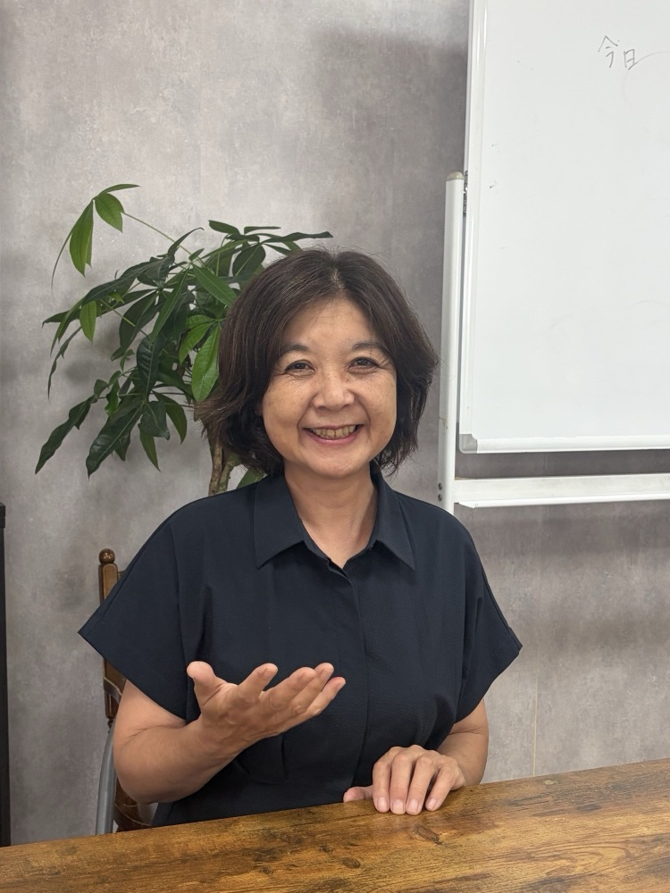

子どもを叱りすぎた日に、親ができること｜後悔を次の一言に変える3つの方法
強い言い方をしてしまって、子どもが黙りこんだ。寝顔を見ながら「なんであんな言い方をしたんだろう」と落ち込む——。そんな夜はありませんか。
叱りすぎた日は、取り返しのつかない失敗ではありません。そのあとの関わり方しだいで、親子の信頼を深めるきっかけにもなります。この記事では、私が3人の子育てと、塾長として30年、親子を見てきた中で大切にしていることを、子育てや発達の研究でわかっていることとあわせてお伝えします。
この記事でわかること
- 叱りすぎたあとにかける、たった一言
- 「叱る」と「怒る」の違いと、言いすぎを次に生かす考え方
- 子どもの4つの個性タイプ別、叱られたときに心に残るところ
- 声かけを変えて、子どもが明るく話すようになった実例
みほ先生にも「言いすぎた」日はありました
3人の子どもを育てる中で、私にも「言いすぎたな」と思ったことはあります。そんなときは、あとで子どもに「ちょっとイライラして、言いすぎてごめん」とあやまりました。
親だって人間です。言いすぎる日があってもいい。そのあとに、どう向き合うかが大切です。

なぜ「叱りすぎた」をそのままにしないほうがいいのか
強い言葉が続くと、親子の間で悪い流れができやすくなることが、研究でも示されています。
アメリカで約1,000組の家族を追いかけた研究では、13歳の時点で親から怒鳴る・ののしるといった強い言葉を受けていた子どもは、14歳にかけて反抗的な行動や落ち込みが増えていました。さらに、子どもの反抗的な行動が、親の強い言葉を引き出すという逆向きの流れも見られました。（Wang & Kenny, 2014）
ここで言う「強い言葉」は、怒鳴ったり、ののしったりすることが日常的に続く状態のことです。一度言いすぎたからといって、子どもを傷つけてしまったと自分を責めすぎる必要はありません。
図1｜強い言葉の悪循環と、それを止めるところ
Wang & Kenny（2014）の「親の強い言葉と子どもの問題行動は、互いに強め合う」という結果をもとに作成。
大切なのは、この流れをどこかで止めることです。そのいちばん簡単な方法が、次の「ごめんね」です。
方法1：気づいたときに「言いすぎた、ごめんね」と伝える
あやまるのに、ちょうどいいタイミングはありません。すぐでも、時間がたってからでも、気づいたときに素直に伝えれば大丈夫です。
叱ったあとにかける一言
「さっきは強い言い方をしてごめんね。」
「親があやまったら、示しがつかないのでは」と思うかもしれません。でも、あやまるのは「強い言い方」についてです。叱った中身まで取り消すわけではありません。
赤ちゃんとお母さんのやりとりを細かく調べた発達心理学の研究では、親子の気持ちのすれ違いはごく日常的に起きていて、大切なのはすれ違わないことではなく、すれ違いを「修復」することだと考えられています。修復をくり返す経験が、子どもが自分の気持ちを立て直す力につながるとされています。（Tronick, 1989）
中高生347人を対象にした2025年の研究では、親が言い訳をするより、子どもがどんな気持ちになったかに目を向けてあやまるほうが、子どもの心が満たされる感覚と結びついていました。（Robichaud, Mageau ほか, 2025）
方法2：「私は何を伝えたかったんだろう」と考える
「叱る」と「怒る」は、似ているようで違います。私の中では、叱るときは「この子に何を伝えたいか」が先にあります。怒っているときは「もう我慢できない」という自分の気持ちが先に出ます。
図2｜「叱る」と「怒る」のちがい
- 先にあるもの
- この子に何を伝えたいか
- 目が向いている先
- 子ども
- 終わったあと
- 伝えたいことが残る
- 先にあるもの
- もう我慢できない、という自分の気持ち
- 目が向いている先
- 自分のイライラ
- 終わったあと
- 強い言い方だけが残りやすい
言いすぎたと思ったら、「私は何を伝えたかったんだろう」と考えてみてください。伝えたかったことがはっきりすると、次にかける言葉が見えてきます。
たとえば「宿題をしなかったこと」に怒ったなら、本当に伝えたかったのは「やると決めたことは守ってほしい」かもしれません。そこまでわかれば、「ごめんね」のあとに、落ち着いた声でそれを伝え直せます。
方法3：子どもが「何に引っかかったか」を聞いてみる
同じ言葉でも、どこが心に残るかは子どもによって違います。子どもの4つの個性タイプで見ると、たとえばこんな違いがあります。
図3｜個性タイプ別：叱られたときに心に残りやすいところ
- 気になりやすいところ
- どうしてダメだったのか
- あとで話すときのヒント
- 理由を落ち着いて話し直す
- 気になりやすいところ
- 声の強さや表情
- あとで話すときのヒント
- まず「強い声でごめんね」と伝える
- 気になりやすいところ
- 次はどうすればいいか
- あとで話すときのヒント
- 次にどうするかを一緒に決める
- 気になりやすいところ
- 自分で決められる余地があるか
- あとで話すときのヒント
- 「どうしたらいいと思う？」と聞く
タイプは一つの目安です。1人の子に、いくつかのタイプの面があることもあります。
タイプは一つの目安です。目の前の子が何に引っかかったのかを聞いてみると、その子の受け止め方が見えてきます。
小学3〜6年生の親子を調べた研究では、子どもの気持ちや考えを尊重し、自分で選ぶ余地を残す関わり方（「自律性の支援」と呼ばれます）をしている親の子どもほど、自分から学習に取り組み、成績や学校への適応もよいという結果が出ています。（Grolnick & Ryan, 1989）
「何に引っかかった？」と聞くことは、子どもの気持ちを尊重する、いちばん身近な一歩です。
3つの方法を、叱りすぎた日の流れにすると
図4｜叱りすぎた日の「立て直し」4ステップ
- 「言いすぎた」と気づく寝る前でも、次の日でもOK
- 「さっきは強い言い方をしてごめんね」あやまるのは「言い方」。叱った中身は取り消さない
- 「何を伝えたかったか」を落ち着いて伝える怒りではなく、伝えたいことだけを短く
- 「何がいやだった？」と聞いてみるその子の受け止め方がわかり、次の声かけに生かせる
声かけが変わると、家の空気も変わる
講座を受けてくださった保護者の方から、こんなご相談がありました。小学生のお子さんがタブレットばかり見て、何もしないことが悩みだったそうです。
私がお伝えしたのは、叱る代わりに、お手伝いを頼むこと（「〇〇ちゃんがやってくれると、ママ助かるなぁ」のように）。そして、その子が好きな書写や絵を描くことに向かえるように仕向けることでした。
図5｜この親子で変えたこと
- 子どもの様子
- タブレットばかり見て、何もしない
- 親の声かけ
- 「やってくれると助かるなぁ」とお手伝いを頼む／好きなこと（書写・絵）に誘う
- 子どもの様子
- 以前より明るく、たくさん話してくれるように
しばらくして、その方からLINEが届きました。考え方と声かけが変わり、お子さんが以前より明るく、たくさん話してくれるようになってきた、という内容でした。
「やめなさい」と叱るのではなく、子どもが「自分は役に立てる」「これが好き」と感じられる方へ声をかける。叱る場面そのものを減らす、という考え方です。
まとめ：叱りすぎた日にできること
1. 気づいたときに「さっきは強い言い方をしてごめんね」と伝える
2. 「私は何を伝えたかったんだろう」と考えて、次の言葉を決める
3. 子どもが何に引っかかったのかを聞いてみる
言いすぎない親を目指すより、言いすぎたあとに立て直せる親を目指すほうが、ずっと現実的です。落ち込みすぎず、次の一言につなげていきましょう。
参考にした研究
- Wang, M.-T., & Kenny, S. (2014). Longitudinal links between fathers' and mothers' harsh verbal discipline and adolescents' conduct problems and depressive symptoms. Child Development, 85(3), 908–923. 論文を読む
- Tronick, E. Z. (1989). Emotions and emotional communication in infants. American Psychologist, 44(2), 112–119.
- Robichaud, J.-M., Mageau, G. A., et al. (2025). Parental apologies as a potential determinant of adolescents' basic psychological needs satisfaction and frustration. Journal of Experimental Child Psychology, 254, 106204. 論文を読む
- Grolnick, W. S., & Ryan, R. M. (1989). Parent styles associated with children's self-regulation and competence in school. Journal of Educational Psychology, 81(2), 143–154.

スクールオーク塾長。3人の子ども全員が東大に合格。塾長として30年、親子を見てきました。国立大学で発達認知学・言語発達学・大脳生理学を専攻。